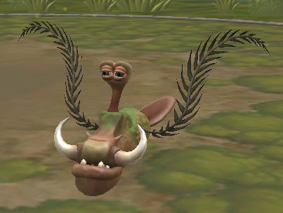

Kreiler
Kreiler

Männchen
Weibchen
Inhaltsverzeichnis
Verhalten
- kriecht
- nicht scheu aber auch nicht aggressiv
Lebensraum
Kreiler leben in den Wäldern Berethaos und sind auch auf der benachbarten Insel Suru zu finden.
Nahrung
- Allesfresser
- Wurzeln, Beeren, Gräser
- jagt ab und zu kleinere Tiere